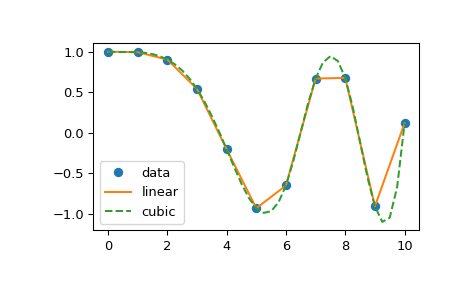

The rise of the Python ecosystem for Data Processing
2024-01
R
- Programming language and free software environment
- Open source
- Interactive
- Ecosystem
- Statistical computing
- Graphics, vizualisation
- Data analysis

Julia

- Fast: designed for high performance
- Open source
- Dynamically typed, interactive use
- Ecosystem
- Scientific and parallel computing
- Visualisation and plotting
- Data science and machine learning
Matlab and others

Matlab (and equivalent Scilab)
- Interactive
- With IDE and plotting
- Closed, not reproducible
- For some researchers
Python
- Created in 1991
- Interpreted and so interactive language
- Really simple syntax (Code readability)
- Dynamically typed and garbage-collected
- Supports multiple programming paradigms:
- structured (particularly procedural),
- object-oriented and
- functional programming

Python
- High-level and general-purpose programming language
- Many, many (many) libraries
- A lot of scientific ones!
- Ecosystem
- Scientific and parallel computing
- Visualisation and plotting
- Machine Learning, Deep Learning
- Web developement

Quizz
What is the most used language (in Data Science)?
- Answer A: R
- Answer B: Go
- Answer C: Python
- Answer D: Matlab
![Answer](data:image/png;base64,iVBORw0KGgoAAAANSUhEUgAAASwAAAEsCAIAAAD2HxkiAAAG1UlEQVR42u3d23IqKRgG0Okp3/+V%20MxepSjkeWmz6P6BrXe3K1jSin9AQYPv5+fkHqPOvKoBal5eP2Lbt79+aTTjddp+u39T9/uTZv9+7%20xtEnPvwu+LwvglPqp6qcLwu/yqur745eN3c9Lf0ubtvWv4bHO0T7P3zrAfzvnvBhff21gb7PQr9f%20mlesBBbfEx77fOz0Hk+/ybx5swd/53UJ/75i7r9rbn7yrPD3H7jrPvzL7tx4Rd0U9d06PPBlen/F%20Zy9w5Fk8bQn3K/TwzcP9e3D9X6dc8foXjv/OnRIOPuv6QjdluLmF/vvEP2zxnuVhv6K2bTtQhzcF%20jrtf1W862B0Nun3faVVOyeGBvtxOCd991rPCT/YwX17rWB1OvmQJDO+O/rYJCZ2Hcy+R3Nt5dud8%20X3U9P4WHB7dvGuGgZ7knTOrBn/hmPLuFyy/8/Z3eB3zs3p2NmHmW7uj579zD24+HYxUnxuatXtlI%20CQcL/9arGHnws3vOU6rISEk328s7t8k83A85Tg5m7jR9D4c3Z0o4Xvhno6P75d9/1v7o6IH3a3Jc%20er8qnv1OLeHrilU7X/VBEYnu94R8PPHTEgK3LGUCIQQhBIQQhBAQQhBCQAhBCAEhBCEEhBCEEBBC%20EEJACEEIASGEz5a0x0zDbfZ2tgarunptzY8XqfZ31n5CtISgOwoIIQghIIQghMBZKrfBbzhMX1v4%20huV8dh5jztOX/oRoCUF3FBBCEEJACEEIgX3tTuqdHCyOGNQeX28x+ciIhR2TkwSTv7PhRE7DU3G1%20hCCEIISAEIIQAkII3+miCq5FzEaMi9hAafLq4y8zYi5ESwgIIQghIIQghIAQwgczRfHa5Dh7xL5G%20tbMm5i20hCCEgBCCEAJCCEIIzGs3RVE7fp12dkLEHEPEuRERF1r6E6IlBN1RQAhBCAEhBCEEzlI5%20RVF7RnFE4dNOrYh45EOrzJpoCQEhBCEEhBCEEBBCWE7SFMWX7O2TtrygdobDJ0RLCEIICCEIISCE%20IITAvHYbPU2OiUesJGg4TJ82x1B7KnhELUVcSEsIuqOAEIIQAkIIQggckDRFkbbdUMTY/ef9gX/D%20AyrSppFqF4toCUF3FBBCEEJACEEIgT/tzqKYnA9Im41ImwtJO8F7Utprb/ip0xKC7igghCCEgBCC%20EAIHVJ5FUbuBUsPh74jR81XmgdKmkbSEgBCCEAJCCEIICCE0UbmKIm2sueEmQg8fWbst0irrV9KK%20pCUE3VFACEEIASEEIQRCbd0OWpjcQCltzUHa4HvEkHraoeINn97wDBItIeiOghACQghCCAghfKek%20KYrJcfa0FQ8Rr+jztkWqXa4R8VF0FgXojgJCCEIICCEIIZCv3SqKtWsza/j7S6Z80rYCM0UBuqOA%20EIIQAkIIQgjkW2OKYuklC7U7NUVcKOI9SvswaAkBIQQhBIQQhBAQQmhi4bMoaov00CoLJhru6bTK%20keZaQtAdBYQQhBAQQhBC4CyXnMukHW0dIW3iYfxCk0WqHfqPeIvHr+4sCkAIQQgBIQQhBIQQmrh0%20K9DkMP3SizBWOY8hrT7TXrtVFKA7CgghCCEghCCEQL7Lh72eiL/lT5sLWWU2Yvy1N1yAkrb4RksI%20uqOAEIIQAkIIQgjsu3zDi1zlSIO0v+Ufv9DkIyPeuIhZk9p5Cy0h6I6CEAJCCEIICCF8p3ZTFLXH%20JteK2Gqp9sSOtLej4TyQlhB0RwEhBCEEhBCEENi3xiqK2p2FJouUdqGGWxhNljNtZYaWEHRHASEE%20IQSEEIQQyPcVGz1F7AK0yjqGySKl7f6UdrpGw3U2WkLQHQUhBIQQhBAQQvhOW8M/Kq+sjoC1ERED%20+hH7Gq2yxVbE/EpEObWEoDsKCCEIISCEIITAvqRVFKvsQVR7pMH4kPpkfTZcFzJZpLSjLLSEoDsK%20CCEIISCEIITAWSo3eqo9N6L2QkufshBxEkbDpRVWUYDuKCCEIISAEIIQAqHanUWxykj3ZJHSdisa%20f5lp5aydnmm4oEdLCEIIQggIIQghIITwnS6q4KXasyhq/8B/vEIaHnoRMROjJQTdUUAIQQgBIQQh%20BM5iiuK1tFOsG5aztvDj54XUHmWhJQTdUUAIQQgBIQQhBA5oN0WxyvqAhyJ2qZrcKyli+6ZaEaso%20tISgOwoIIQghIIQghEC+yimKhqcCjEvbwihiV6WGb9zkzEFEJWsJQXcUEEIQQkAIQQiBUFvDPyoH%20LSEghCCEgBCCEAJCCEIICCEIISCEIISAEIIQAkIIQggIIQghIIQghIAQghACQghCCAghCCEghCCE%20gBCCEAJCCEIICCEIISCEsIz/AHUSgpxcMbKOAAAAAElFTkSuQmCC)
Answer link Key: ay
Numpy
- Manipulate N-dimensionnal arrays
- Numerical computing tools :
- math functions
- linear algebra
- Fourier transform
- random number capabilities
- etc
- Performant: core is well-optimized C/C++ and Fortran code
- Easy and de facto standard syntax
Nearly every scientist working in Python draws on the power of NumPy

# The standard way to import NumPy:
import numpy as np
# Create a 2-D array, set every second element in
# some rows and find max per row:
x = np.arange(15, dtype=np.int64).reshape(3, 5)
x[1:, ::2] = -99
x
array([[ 0, 1, 2, 3, 4],
[-99, 6, -99, 8, -99],
[-99, 11, -99, 13, -99]])
x.max(axis=1)
array([ 4, 8, 13])
# Generate normally distributed random numbers:
rng = np.random.default_rng()
samples = rng.normal(size=2500)Scipy

- Use Numpy arrays as basic data structure
- Offer scientific functions :
- Optimization
- Interpolation
- Signal processing
- Linear algebra
- Statistics
- Image processing
import numpy as np
from scipy import linalg
import matplotlib.pyplot as plt
rng = np.random.default_rng()
xi = 0.1*np.arange(1,11)
yi = 5.0*np.exp(-xi) + 2.0*xi
zi = yi + 0.05 * np.max(yi) * rng.standard_normal(len(yi))
A = np.concatenate((np.exp(-xi)[:, np.newaxis], xi[:, np.newaxis]),axis=1)
c, resid, rank, sigma = linalg.lstsq(A, zi)
xi2 = np.arange(0.1,1.01,0.01)
yi2 = c[0]*np.exp(-xi2) + c[1]*xi2
Pandas
- Deal with Dataseries and Dataframes (e.g. tables)
- Data manipulation and analysis
- Selection
- Grouping
- Merge
- Statistics
- Transformation
- Numerical tables and time series
- Extension to geospatial data with geopandas


import pandas as pd
pd.read_csv('Myfile.csv')
pd.describe()Xarray

- Manipulate N-dimensionnal labelled arrays and datasets
- Introduce dimensions, coordinates and attributes on top of Numpy
- Borrows heavily from Pandas

Quizz
Which tools allows manipulating tabular data?
- Answer A: Numpy
- Answer B: Xarray
- Answer C: Pandas
- Answer D: Scipy
![Answer](data:image/png;base64,iVBORw0KGgoAAAANSUhEUgAAASwAAAEsCAIAAAD2HxkiAAAHCklEQVR42u3d3W7rKBQG0PEo7//K%20PReVoir1Dzbee0O91tXoTNNg4i9gKLB8fX39B9T5XxVArdfhTyzL8v5vzSbcbvmdru/Uff/L1n+f%20e4+rL1z9Lvh7XwS31E908bbuk50v6MGva7ju6EeFDmjqz3JZlvFreP8L4ucX8ce/f/yvjztq0guv%20eSZcrax3/fpWC/1+GbNiPz70jw7RzzLvRFQOb3gmvHZ/7PQeb3/IPOwXHZbwfdP8/q75+JfGvtnv%20+3Kre3a2oj6KerYOT32Zfr/LsiyHzyM7jy0fv4TNlvDeb6yfX4SrvZQbvyMP+0VnS9jfN9tqMVZb%20vK1bc7+ivu/ps3V4oYt42BXSS7qzOxrahzns3mT25XZKeK1vdnsP8/C9rtXh2Utu+dLU57yzO/ru%20NuQ8aYz526693WrVjdky9PRddzqW+py3PROe6pvl3Adnn3Ciy79V+N9Peo+9I9ufJInqjq4+L+2M%20VdwYm1O9spYSNhb+1FW0/PDWM+ctVXThgXB19GVnzMmg+rkP5fDJrTMPv4ccOwczd5q+1eHNnhK2%20F35rdHS//Puv2h8dvfB5XRuXNlkfHkJ19KjbRTBGfybkCQ9sKkFLCAQPzABCCEIICCEIISCEIISA%20EIIQAkIIQggIIQghIIQghIAQghACQggjSdpjZsDtmXfOVKh699qav7b/Wv7vrL1DtISgOwoIIQgh%20IIQghMBdKrfBH3CYvrbwA5Zz6zzGnJdPfYdoCUF3FBBCEEJACEEIgX3DndTbOVgcMajdvt6i8ycj%20FnZ0ThJ0/s4BJ3IGPBVXSwhCCEIICCEIISCE8EwvVfBTxGxEu4gNlNIqJGIuREsICCEIISCEIISA%20EMIfZoriWNrGRBEbKHVOe3S+kXkLLSEIISCEIISAEIIQAluGm6KoHb+OOHqh89rbf2da4WsnHv7e%20DIeWEIQQhBAQQhBCQAjhmSqnKGrPKI4ofNqpFRE/uWqWWRMtISCEIISAEIIQAkII00maonjI3j5p%20ywtqZzjar90doiUEIQSEEIQQEEIQQmDLMtrQcNpeSRHnXbcXKaJCIs6iaC/SgPU5y6yJlhB0R0EI%20ASEEIQSEEJ4paYqi9g/808buIyqk/eXtZnmjiHJGbIelJQTdUUAIQQgBIQQhBC4Y7iyKznHhAScz%20Okf5a5cstF9me+HTqi7trtMSgu4oIIQghIAQghACF1SeRVE7pF67o9SqAUfP282yIZWWEBBCEEJA%20CEEIASGEQVSuokgbfI8Y+o/YuirtNIhZ1q9E3GADzltoCUEIQQgBIQQhBIQQnmmZ5Y/0V4o+3ukF%207S/vLFKnAZeApL28dtZESwi6o4AQghACQghCCLwlraKI2FVpwHMjIiqkdpy9cwlIxAqSiMt0FgXo%20jgJCCEIICCEIIZBvuFUUtX/kPsthEhFTPrUfR9qamLR7SUsIuqOAEIIQAkIIQgjsm3iKYlXaFkad%20796p9o0iainiDpllEzMtIQghCCEghCCEgBDCM1Vu9NQ+gjz1Nj4RI/Kz7GcVsQAl4lTwtOUvWkLQ%20HQWEEIQQEEIQQuAtaRVF7T48A+4CNMvo+dRzIbOst9ASgu4oCCEghCCEgBDCM1Vu9FQ7+F57me1q%20z2OY5YiI2k2utISgOwoIIQghIIQghMAFc2z01PlGndIWN6SNiXdeUeemTLX3UtrCDi0h6I4CQghC%20CAghCCGwr3KjpwEXTEQMf089er5qlsO6016uJQTdUUAIQQgBIQQhBC54jVagtFH+2uMcOg+Cbr+i%20qV/ebpbZCC0h6I4CQghCCAghCCHw9pqilLU7C3UWKe2IiFmOtu6s5E4Drt3REoIQghACQghCCAgh%20PNPrCRcZsY6hc6Q77RzpiN8ZMXMw4MHaNnoC3VFACEEIASEEIQRCLQP+UXlldYw3G7EqbVOmAYf+%20Z9l7SksIuqOAEIIQAkIIQgjsS1pFMeAmQrWrKDqH/meZjei8Q9qLlPZxaAlBdxQQQhBCQAhBCIG7%20VG70VHtuxIBvlFbOiAH92q2raudstISgOwoIIQghIIQghMAFw51FMeBId+1+QZ1D6rXbInUuAYn4%203Adc0KMlBCEEIQSEEIQQEEJ4ppcquKZzTDzt5WnX3jlrEjHHEDGRoyUE3VFACEEIASEEIQTuYori%20WMSCibTjHDrLWVv4tPNCnEUBuqOAEIIQAkIIQgjkG26KYpb1AasidqlKOy57wI+js5IHXICiJQTd%20UUAIQQgBIQQhBN4qpygGPBWgXdoWRmlnUdR+cBEndnRWspYQdEcBIQQhBIQQhBAItQz4R+WgJQSE%20EIQQEEIQQkAIQQgBIQQhBIQQhBAQQhBCQAhBCAEhBCEEhBCEEBBCEEJACEEIASEEIQSEEIQQEEIQ%20QkAIQQgBIQQhBIQQpvEPs4TibF5xhVAAAAAASUVORK5CYII=)
Answer link Key: qa
Landscape

Matplotlib
- Base/Reference plotting library
- For Python and Numpy
- Static, animated, and interactive visualizations
- Designed to be as usable as MATLAB
fig, ax = plt.subplots(subplot_kw={"projection": "3d"})
# Plot the surface.
surf = ax.plot_surface(X, Y, Z, cmap=cm.coolwarm,
linewidth=0, antialiased=False)
# Customize the z axis.
ax.set_zlim(-1.01, 1.01)
ax.zaxis.set_major_locator(LinearLocator(10))
# A StrMethodFormatter is used automatically
ax.zaxis.set_major_formatter('{x:.02f}')
# Add a color bar which maps values to colors.
fig.colorbar(surf, shrink=0.5, aspect=5)
plt.show()

Seaborn

- Based on Matplotlib
- Integrates closely with Pandas
- Dataset oriented to produce informative plots

Plotly

- Interactive, publication-quality graphs
- Make dashboard with Dash

Bokeh

- Interactive, publication-quality graphs
- Make dashboard with Dash

Pyviz

- HoloViews: Declarative objects for instantly visualizable data, building Bokeh plots from convenient high-level specifications
- GeoViews: Visualizable geographic data that that can be mixed and matched with HoloViews objects
- Panel: Assembling objects from many different libraries into a layout or app, whether in a Jupyter notebook or in a standalone serveable dashboard
- Datashader: Rasterizing huge datasets quickly as fixed-size images
- hvPlot: Quickly return interactive HoloViews or GeoViews objects from your Pandas, Xarray, or other data structures
- Param: Declaring user-relevant parameters, making it simple to work with widgets inside and outside of a notebook context
Kaggle stats

Sickit Learn

- Simple and efficient tools for predictive data analysis
- Built on NumPy, SciPy, and matplotlib
- Every classical ML Algorithms
- Standard interface with Pipelines, estimators, transformers
- No GPU support (so not good for Deep Learning)
from sklearn.ensemble import RandomForestClassifier
clf = RandomForestClassifier(random_state=0)
X = [[ 1, 2, 3], # 2 samples, 3 features
[11, 12, 13]]
y = [0, 1] # classes of each sample
clf.fit(X, y)Sickit Learn

TensorFlow, Keras


- Deep Learning on GPU with no previous knowledge
- Keras on top of Tensorflow
- Tensorflow complete platform, with TensorBoard and other tools

Pytorch

- Deep Learning on GPU with no previous knowledge
- Always trolls about Keras/TF vs PyTorch
- Additional librairies:
- pytorch-lightning
- pytorch3d
Gradient boosting algorithms
XGBoost
- Distributed gradient boosting library
- Efficient, flexible and portable
- XGBoost provides a parallel tree boosting
- Runs on major distributed environment (Hadoop, SGE, MPI, Spark)
- Solve problems beyond billions of examples

LighGBM
- Distributed gradient boosting framework
- Efficient, Faster, lower memory usage, better accuracy
- Support of parallel, distributed, and GPU learning
- Capable of handling large-scale data

Data Version Control

- Version your data and models: Store them in your cloud storage but keep their version info in your Git repo.
- Track experiments in your local Git repo (no servers needed).
- Share experiments and automatically reproduce anyone’s experiment.
MLFlow

- Tracking experiments to record and compare parameters and results (MLflow Tracking).
- Packaging ML code in a reusable, reproducible form in order to share with other data scientists or transfer to production (MLflow Projects).
- Managing and deploying models from a variety of ML libraries to a variety of model serving and inference platforms (MLflow Models).
- Providing a central model store to collaboratively manage the full lifecycle of an MLflow Model, including model versioning, stage transitions, and annotations (MLflow Model Registry).
MLFlow

Quizz
Which is the best Deep Learning library in Python?
- Answer A: Sickit-Learn
- Answer B: Keras
- Answer C: TensorFlow
- Answer D: PyTorch
- Answer E: XGBoost
![Answer](data:image/png;base64,iVBORw0KGgoAAAANSUhEUgAAASwAAAEsCAIAAAD2HxkiAAAHCklEQVR42u3dXZOaMBgG0NLZ//+X%207cXOWEcRI+H9QM+56mzXJQYeEhNJlsvl8geo81cVQK2fl7+xLMv135pNONzymK7f1P3+5Nm/3zvG%203heu3gs+70ZwSP1EF++u8m9/eOvZhcTrlnBZluaVdblcnp14Mcsp+bIs1+vk8b3cnZ3znqzKz4Sr%20tXZb++5qcfeXnhV7d9JvO0TjjScHfCbcd31s9B4P/5B5d8oH/+ZtCa9X2+O95u4nzwr/eNk9XrKr%20N7J3K+quqO/WYdDNdHdc+d8SHltr11Py2Ie8/a9Djnj7B9+9Va+WcPBVtwe6K8PdR+jbS/Px6n+W%20h+2K+u0WvluHdwUevP++fJVe0mHd0dCbYtz9ckdfbqOER93sJ3uYL4+1rw7ffcurnwYlMLA7+tsm%20JHQhjj1Ecp/n2Sfnx6rreV3uKNXGSyTw+M+EOSOQB56zZx/h8gv/+Emv/4DzYA2/7DBLUbvu6MYH%20idWxigNjM/9RZ1/h33oXI7/87DPnIVX0boWvFkMCj7zTvfzkNpmHxyHHycHMjaZvdXhzpoTjhX82%20Orpd/u1XbY+O7jhf+8alB4uxfTcU160aVjtfdV/XgnX/TMjHEz8tIRA/MAMIIQghIIQghIAQghAC%20QghCCAghCCEghCCEgBCCEAJCCEIICCF0krTGTMNtCTbWk646em3N71t/Lf9v1l4hWkLQHQWEEIQQ%20EEIQQuAolcvgNxymry18w3I+248x5+WnvkK0hKA7CgghCCEghCCEwLZ2O/VODhZHDGqPP28x+ZsR%20D3ZMThJM/s2GEzkNd8XVEoIQghACQghCCAghfKcfVXArYjZiXO3g++TbjJgL0RICQghCCAghCCEg%20hPDBTFG8NjnOHrGu0fhkRsQzHOYttIQghIAQghACQghCCMxrN0VRO34dsXdCxObSk4VvuHjUWa4Q%20LSHojgJCCEIICCEIIXCUyimK2j2KIwofMZmR9jcjZjgidtvWEgJCCEIICCEIISCE8BmSpiis7bNb%20xHxAw9mIb75CtIQghCCEgBCCEAJCCN9p6TY0HLFldNoKSONFiqiQiCczxovUsD5rtx/XEoLuKCCE%20IISAEIIQAtuSnqJIW8IoYvS8dhYnbeh//MRFnOK0JaFq61NLCLqjgBCCEAJCCEIIXLXbi2JyPiBi%20NqL2OYaGCyideuagdq9vLSHojgJCCEIICCEIIXBVuRdF2lfX056iOPWTBOPSFuOKOB1aQkAIQQgB%20IQQhBIQQmqh8iiLtq+sN92OoPXrakxm1q2k1XNNJSwi6o4AQghACQghCCFy12y77jaKfZCPo2kcW%20xovU8BGQiJc33INESwi6oyCEgBCCEAJCCN+pcrvscauDxWf5jvxkhTScIJk8HeMvn7xC0l6uJQTd%20UUAIQQgBIQQhBHZo9xRFwy+5TxY+opwRUz61pyNtH46G15KWEHRHQQgBIQQhBIQQvtM5FnqKeOYg%20bZi+dqWmiANF1FLaxaAlBIQQhBAQQhBCQAihicqFnianE84yVB0xIt9w1mTyvUesKFW7pbmWEHRH%20ASEEIQSEEIQQ2PbzYe+n9kmCyXKOHyht64XauZCIo9fORmgJQXcUEEIQQkAIQQiBq6SFnj5vcZ6I%209z5ZIREHOssWEWeZmtISgu4oIIQghIAQghACV0lPUaR9xT7iQGlLA6WNiU8+rjG5KNOk2lkTLSHo%20jgJCCEIICCEIIXCUT3uKImL8Om3mIG3SZdJZNus+y3nXEoLuKAghIIQghIAQwneq3Isi7emEtAHo%20yZmYiF3BT70z9lmOriUE3VFACEEIASEEIQR2OMd22bUrC00WqeF+DGnLItW+fPK9awlBdxQQQhBC%20QAhBCIFQlQs9RTw0MHn0tMKPazik3nA7h9qJHC0h6I4CQghCCAghCCGww9JwBLyyOvo9iDB+9Igl%20oRoO/aetfGWKAnRHASEEIQSEEIQQCJW00NNZvndf+2zE+IFqd4eOqJDJIqVtZaElBN1RQAhBCAEh%20BCEEjtJuoaezHL3hpMuq2kqOKFLE3h6116eWEHRHQQgBIQQhBIQQvlO77bLTNpceP3rEN/TTnmOo%20XRZp9eW1O3Y0nFvSEoIQghACQghCCAghfKcfVXCgydmIL3kQoXZ6Jm0tLy0h6I4CQghCCAghCCGw%20zRTFa2lbL6T9zYaLXI1PJ0RMe9iLAnRHASEEIQSEEIQQyNduiqJ2sDhiF+uIo9cu31QrbVNxLSHo%20jgJCCEIICCEIIRCqcoriLDtOr0pbwiht8ajaExex4cdkJWsJQXcUEEIQQkAIQQiBUEvDL5WDlhAQ%20QhBCQAhBCAEhBCEEhBCEEBBCEEJACEEIASEEIQSEEIQQEEIQQkAIQQgBIQQhBIQQhBAQQhBCQAhB%20CAEhBCEEhBCEEBBCOI1/vZ2gfbEFTkcAAAAASUVORK5CYII=)
Answer link Key: ca
Sympy

- Library for symbolic mathematics
- Simplification, Calculus, Solvers
from sympy import symbols
x, y = symbols('x y')
expr = x + 2*yShapely
- Library for manipulation and analysis of planar geometric objects
import shapely
import numpy as np
geoms = np.array([Point(0, 0), Point(1, 1), Point(2, 2)])
polygon = shapely.box(0, 0, 2, 2)
shapely.contains(polygon, geoms)
Pandas Extension
GeoPandas
- For manipulating geospatial data in python easier
- Provide geospatial operations in pandas:
- Measure areas and distances
- Compute intersections/unions
- Make maps and plots

Text Extensions for Pandas
- Add NLP-specific data types, operations, and library integrations to Pandas
- Make it easier to manipulate and analyze NLP-related data with Pandas
Jupyter (Lab and Notebook)


- Open source web application
- Create and share documents that contain live code
- Equations, visualizations and narrative text
- Interactive programming and visualizing
- Usage:
- data cleaning and transformation,
- numerical simulation,
- statistical modeling,
- data visualization,
- machine learning
- Used by Google Colab or Kaggle
VSCode

- Source-code editor developed by Microsoft for Windows, Linux and macOS.
- Features include support for
- debugging,
- syntax highlighting,
- intelligent code completion,
- snippets,
- code refactoring,
- testing and
- embedded Git.
- Lots of extensions that add functionality.

PyCharm

- IDE used for programming in Python
- Cross-platform, working on Microsoft Windows, macOS and Linux
- Features include support for
- Code analysis,
- Graphical debugger,
- Integrated unit tester,
- Integration with version control systems
Pip / Conda

- Package libraries
- Make them available on repositories
- Build environments automatically
Packaging: Pip / Conda

Difference between Conda and Pip according to Anaconda.
| conda | pip | |
|---|---|---|
| manages | binaries | wheel or source |
| can require compilers | no | yes |
| package types | any | Python-only |
| create environment | yes, built-in | no, requires virtualenv or venv |
| dependency checks | yes | no |
Binder

Turn a Git repo into a collection of interactive notebooks